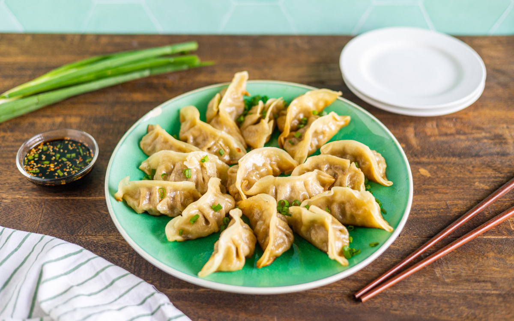

Chinese Dumplings (Jiaozi)
Chinese dumplings, or jiaozi, are savory pockets of dough filled with seasoned meat and vegetables. They
can be boiled, steamed, or pan-fried and are a staple in Chinese households, especially during festivals
and celebrations.
Preparation:
45–60 minutes
Cook:
10–15 minutes
Total:
1 hour to 1 hour 15 minutes
Ingredients:
- 50–60 round dumpling wrappers
- Filling:
- 300g (10 oz) ground pork (or chicken/shrimp)
- 1 cup napa cabbage, finely chopped
- 2 green onions, finely chopped
- 1 tablespoon soy sauce
- 1 tablespoon sesame oil
- 1 tablespoon rice wine or Shaoxing wine
- 1/2 teaspoon grated ginger
- 1 clove garlic, minced
- 1/2 teaspoon salt
- 1/4 teaspoon white pepper
- For boiling/pan-frying:
- Water (for boiling or steaming)
- 1–2 tablespoons vegetable oil (for pan-frying)
Instructions:
- Mix all filling ingredients in a large bowl until well combined. Let rest for 10 minutes.
- Place a spoonful of filling in the center of a dumpling wrapper. Wet the edges with water, fold in
half, and pinch or pleat to seal.
- To boil: Bring a pot of water to a boil. Add dumplings in batches, stirring gently. Cook for 5–6
minutes until they float and the filling is cooked through.
- To pan-fry: Heat oil in a skillet over medium heat. Add dumplings in a single layer, fry until
bottoms are golden brown. Add 1/4 cup water, cover, and steam for 5–6 minutes until cooked.
- Serve hot with dipping sauce (soy sauce + vinegar + chili oil or garlic).